Deutsche Gesellschaft für Asienforschung · Roundtable: DH & KI in den Regionalwissenschaften
Dormant Digital Collections, AI Triage
Lessons from the Islam West Africa Collection and beyond
Who I am
A historian, working with AI
- Data Curator, Cluster of Excellence "Africa Multiple", University of Bayreuth
- Historian of Islam in Francophone West Africa since the 1960s — youth, women, politics, education
- Developer of the Islam West Africa Collection (IWAC) since 2021
- Coordinator, Digital Humanities and AI in African Studies
- Edited volume forthcoming, Bielefeld University Press (2027)
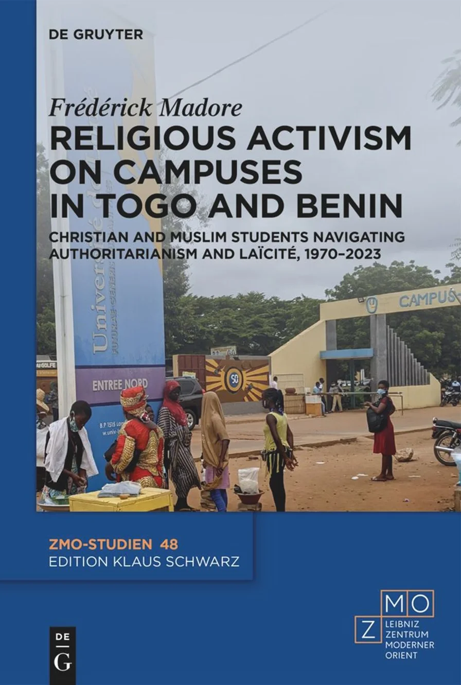
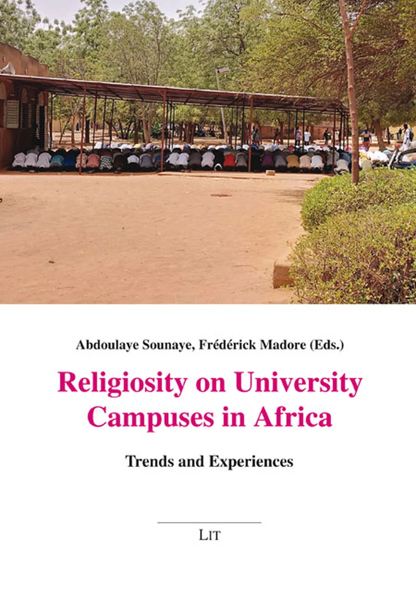
The allure of the archive
From the reading room to the "scanning party"
Farge (1989): the slow, tactile encounter — "touching the real".
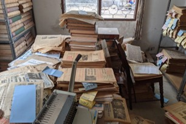
An unsorted backroom, photographed in three days.
From backlog to triage
One historian, no team
- Fieldwork across West Africa, plus libraries in Berlin, Paris, Washington
- Public side: the open-access IWAC — islam.zmo.de
- Cataloguing it all by hand is impossible
The shape of the talk
Six uses of AI in the research workflow
Use 1 · Text extraction
Multimodal LLMs read the page like a person
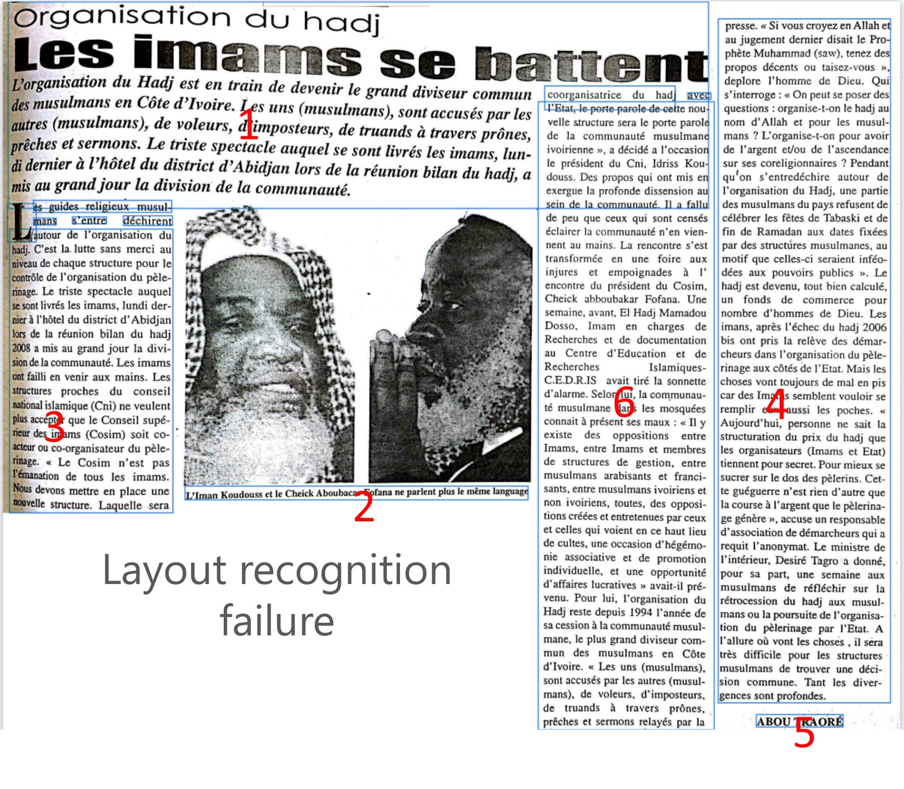
Layout recognition failure: traditional OCR scrambles a multi-column page.
- Traditional OCR breaks on multi-column papers, tables, handwriting, quick phone scans
- Even a 5–10% error rate matters: one typo in a name hides a document
- "Ouédraogo" → "Oueclaoqo": the source is there, but no one will find it
- Multimodal AI handles it in one pass: printed & handwritten, French & Arabic, messy layout
Use 1 · in practice
Reading printed Ewé

Togo Presse, 31 July 1976.
Loading the extraction…Printed Ewé, diacritics and all — scroll for the full extraction.
Use 1 · in practice
Reading cursive French
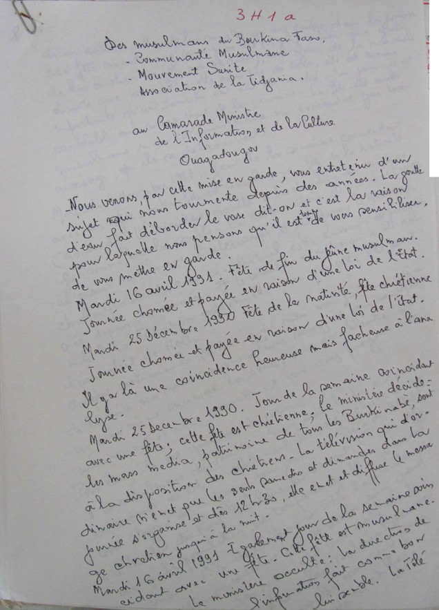
Handwritten letter, Burkina Faso, 1991.
3 H 1 a
Des musulmans du Burkina Faso,
- Communauté Musulmane
- Mouvement Sunite
- Association de la Tidjania.
au Camarade Ministre de l'Information et de la Culture, Ouagadougou
Nous venons, par cette mise en garde, vous entretenir d'un sujet qui nous tourmente depuis des années. La goutte d'eau fait déborder le vase dit-on et c'est la raison pour laquelle nous pensons qu'il est temps de vous sensibiliser, de vous mettre en garde.
Mardi 16 avril 1991. Fête de fin du jeûne musulman. Journée chômée et payée en raison d'une loi de l'État.
Mardi 25 décembre 1990 Fête de la nativité, fête chrétienne Journée chômée et payée en raison d'une loi de l'État.
Il y a là une coïncidence heureuse mais facheuse à l'analyse.
Mardi 25 Decembre 1990. Jour de la semaine coïncidant avec une fête ; cette fête est chrétienne, le ministère décide : les mass media, patrimoine de tous les Burkinabè, sont à la disposition des chrétiens. La télévision qui d'ordinaire n'émet que les seuls samedis et dimanches dans la journée s'organise et dès 12h30, elle émet et diffuse le message chretien jusqu'à la nuit.
Mardi 16 avril 1991 Egalement jour de la semaine coïncidant avec une fête. Cette fête est musulmane. Le ministère occulte : la direction de l'information fait comme bon lui semble. La Télé
Highlighted: the writer's own spelling slips, kept verbatim — the model didn't silently correct them.
Use 2 · Transcription
Audio and video transcription
- The same multimodal logic extends to audio and video
- Transcripts return with timestamps and speaker labels
- IWAC corpus: ~155 hours of Nigerian preachers, mostly Hausa & Arabic
- Early tests in Hausa, Arabic, Kurmanji Kurdish — promising as a first draft
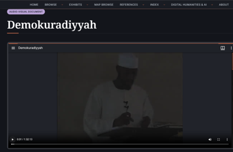
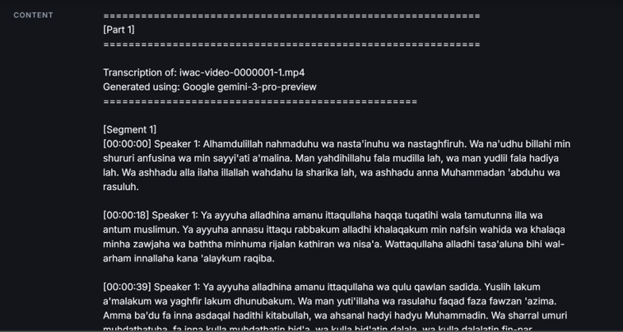
A caution
Cleaner than the source
- AI-OCR and audio-to-text open previously unusable material
- The model silently modernises spellings, standardises toponyms, smooths regional variants
- It can also hallucinate: invent text that was never there
- The failure mode is harder to spot: a fluent paragraph with invented detail
Use 3 · Extraction at scale
Entities and topics: who, where, what, about what
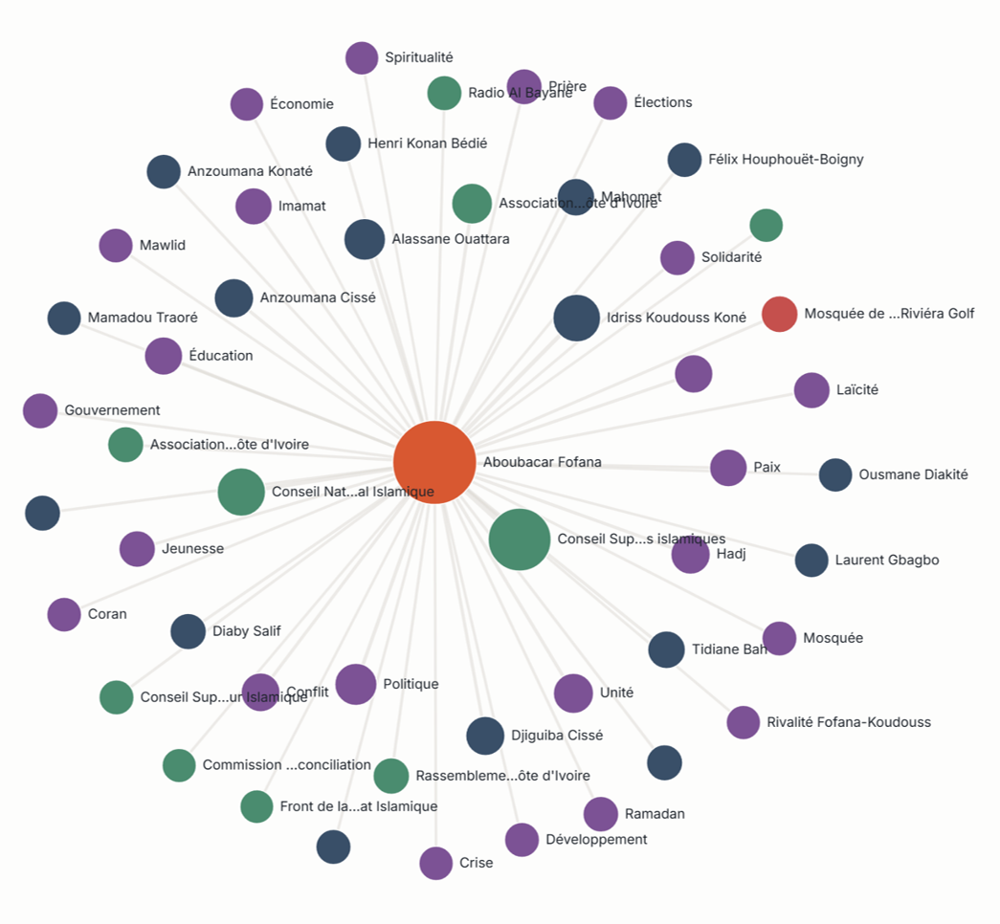
Entities linked across the corpus.
- Manual keyword tagging: unworkable across thousands of documents
- Standard DH tools trained on Western text — they miss local names
- OCR noise compounds the problem
- LLMs extract not just entities but topics, given the right prompt
Use 4 · "No-code" visualisation
From text repository to knowledge base
An explorable layer over the documents — built without hand-written code.
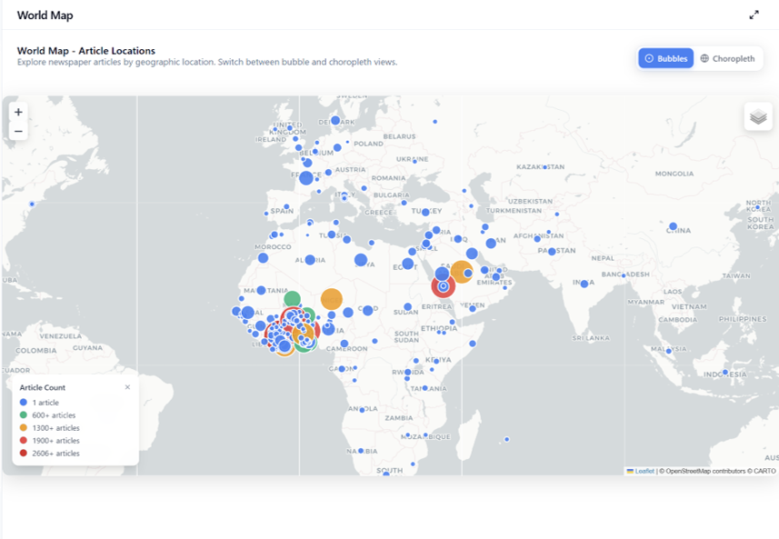
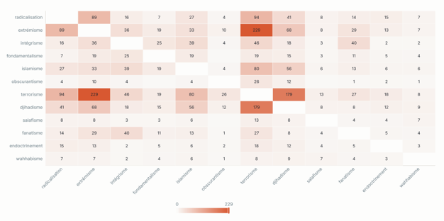
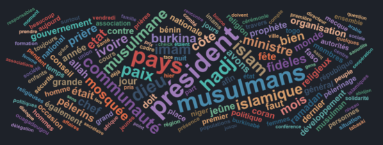
Use 5 · First-pass analysis
Sentiment analysis, without writing code
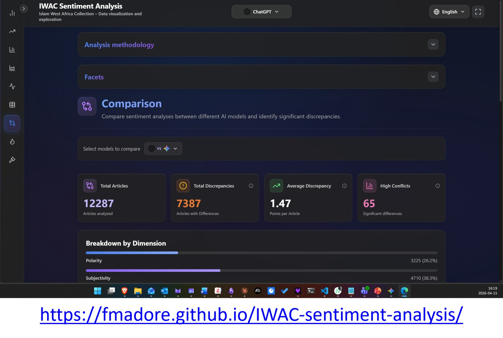
Three models compared, article by article. fmadore.github.io/IWAC-sentiment-analysis ↗
- 12,000+ articles, three LLMs, three axes: polarity towards Islam, subjectivity, centrality of religion
- ~€35 and 24 hours of batch processing — months of manual coding avoided
- Triage, not full reading; model disagreement is itself a signal
Use 6 · Chat with your sources
NotebookLM: the lowest-friction entry point
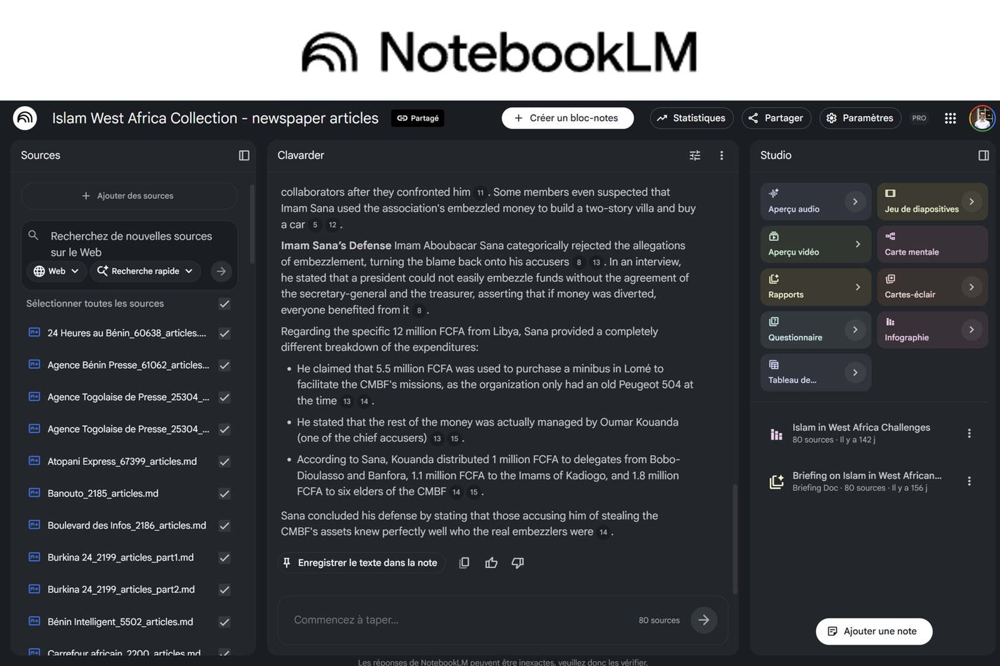
NotebookLM over the IWAC newspaper corpus.
- Only knows what you upload; cites the exact passage for every answer
- Your sources are not used to train models
- Free tier: 50 sources per notebook (PDF, web, YouTube, audio)
- Multilingual: ask in your language, it searches sources in any of 80+
The stakes
Western tools, non-Western sources
- Training data overwhelmingly Western — concepts read through European lenses
- Labour: Kenyan annotators paid ~$5/day; similar conditions elsewhere
- Infrastructure: strongest models in US firms; only China credible as an alternative
- Opaque and non-reproducible: the same input can yield different answers
Research at scales, and with documents, not previously feasible — degraded scans, under-resourced languages, corpora too large to read.
In closing
The scans on our hard drives are the raw material
- The technology is no longer the obstacle — small teams, no deep coding required
- Models you can download and run on a university server — evolving fast
- AI organises; we interpret. Always.
- Experiment with sources you know well, so you can catch the errors